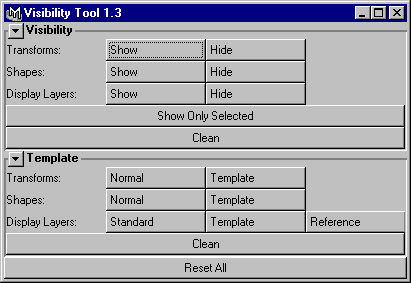

visTool

After hiding and/or templating various nodes, I sometimes end up with a visible transform node with an invisible shape, or a shape that is templated while its transform is not. Attempting to show these objects can be a little tedious because toggling the transform node will not restore the shape's visibility. In this case it involves selecting the shape node, determining if it's visible, making it visibile if it isn't, and then doing the same for the transform. Too much time.
Visibility->Transforms->Show
Makes all transform nodes visible.
Visibility->Shapes->Show
Makes all shape nodes visible.
Visibility->Display Layers->Show
Makes all Display Layers visible.
Visibility->Transforms->Hide
Hides all transform nodes.
Visibility->Shapes->Hide
Hides all shape nodes.
Visibility->Display Layers->Hide
Hides all Display Layers.
Template->Transforms->Template
Templates all transform nodes.
Template->Shapes->Template
Templates all shape nodes.
Template->Transforms->Normal
Restores (un-Templates) all transform nodes.
Template->Shapes->Normal
Restores (un-Templates) all shape nodes.
Template->Display Layers->Standard
Sets the display type of all Display Layers to Standard
Template->Display Layers->Template
Sets the display type of all Display Layers to Template
Template->Display Layers->Reference
Sets the display type of all Display Layers to Reference
Visibility->Show Only Selected
Hides all unselected objects.
Visibility->Clean
Scans all shape nodes in the scene file. If a shape node is invisible and if its immediate parent is a transform node which is also invisible, then the visibility for the shape node is restored.
Template->Clean
This function follows the same process as above, but resets the template attribute.
The Clean function was, in theory, supposed to be more useful that it actually is. In practise, I found that in almost all cases the Visibility->Shapes->Show function was required, or at least did what I needed. But since the code was already written, I left it in.
Reset All
Restore and resets all transform and shape nodes to visible and normal status, and sets all Display Layers to Visible and Standard display type. This turns on all ‘.visibility’ attributes and turns off
all ‘.template’ attributes.
The Show Only Selected function requires that you have the following MEL script installed:
showOnlySelected.mel